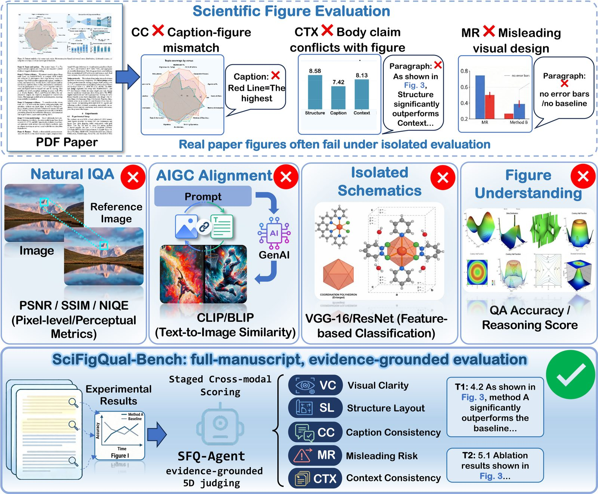
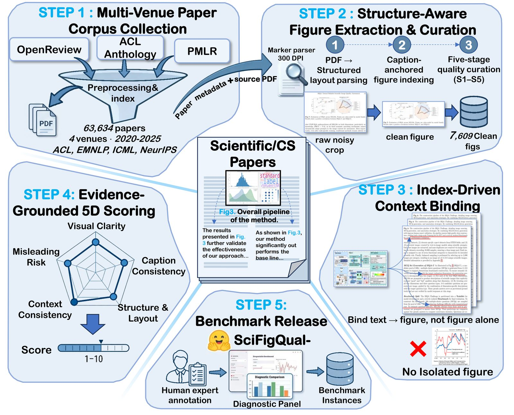
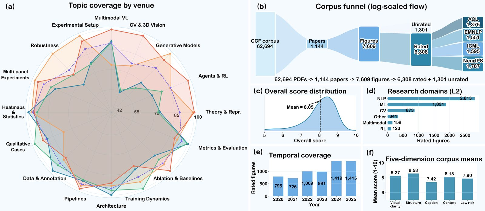
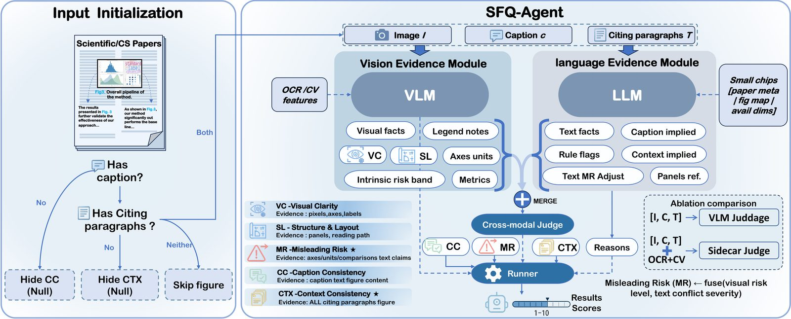

Protocol 1
Direct
Single VLM pass over figure + caption + citing text.
A benchmark for assessing published CS scientific figures with caption and citing-paragraph context— not isolated crops. Five orthogonal scores on a unified 1–10 scale, plus an auditable staged judge: SFQ-Agent.

Single VLM pass over figure + caption + citing text.
Same call, plus OCR/CV side features for denser visual cues.
Staged vision / language / fusion + deterministic Runner.
Scale that matches top-conference figure assessment—with gold labels bound to real manuscript evidence.
Each dimension is scored on [1, 10] with L1 evidence gating: missing caption hides CC; missing citing text hides CTX—never penalize absent metadata as “low quality”.
Legibility of text, marks, and encoding at publication scale.
Panel organization, reading path, and chartjunk control.
Does the caption match visible objects, metrics, and trends?
Do citing paragraphs claim only what the figure supports?
Higher = lower risk: axes, baselines, unfair comparisons.
A deterministic construction funnel: acquire → extract → bind context → annotate → package eval1200.

Fig. 2 — Construction pipeline (click to enlarge)
62,694 raw PDFs from OpenReview, ACL Anthology, and PMLR are curated into 7,609 figures with index-driven citing paragraphs.
Venue–topic coverage, domain mix (NLP / ML / CV), temporal span 2020–2025, and per-dimension means. Caption consistency remains the weakest axis—motivating manuscript-grounded CC/CTX evaluation.

Fig. 4 — Dataset statistics (click to enlarge)
Monolithic VLMs conflate perception with text verification. SFQ-Agent separates modalities, then fuses only where needed.

Fig. 3 — SFQ-Agent staged judging (click to enlarge)
Compared against Direct and Sidecar (+ OCR) on identical inputs.
29 protocol–backend configurations. Best overall: SFQ-Agent (F3) with GPT-5.6-Sol— lowest MAE and highest within-±1 agreement versus human gold. Gains come from protocol–evidence alignment, not model scale alone.